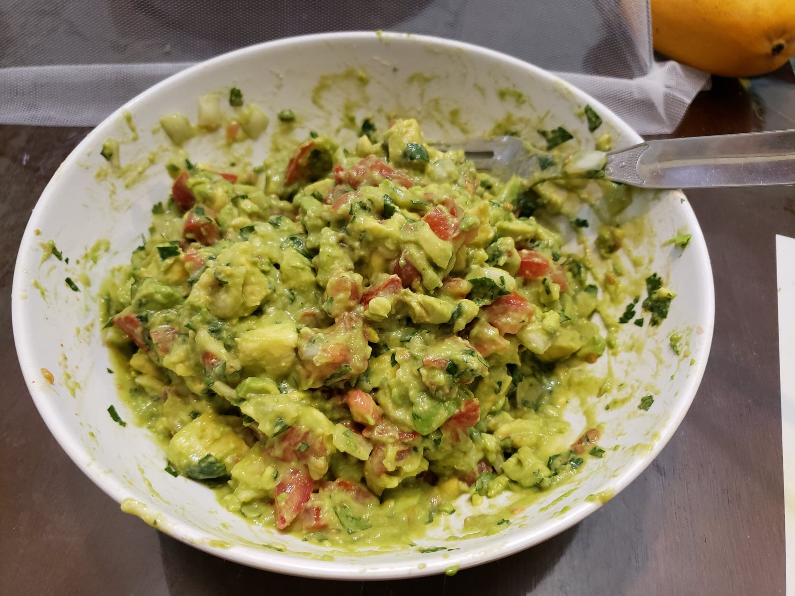

Guacamole

Ingredients:
- 3 Avocados, cut into cubes
- 1 Lime, juiced
- 1 tsp Salt
- 1 Small white onion, diced
- 3 tbsp Cilantro, chopped
- 2 Roma tomatoes, diced
- 1 tsp Garlic, minced, or 1/4 tsp Garlic powder
- Optional: 1 Jalapeño, deseeded and diced, or Cayenne pepper to taste
Instructions:
- In a medium bowl, combine together all the ingredients. Stir and mash to preference.